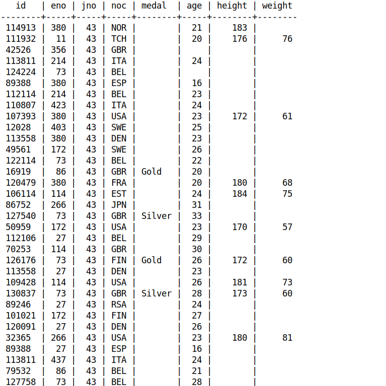

Nous avons créé un algorithme permettant d'organiser une base de données d'import de statistiques sur les jeux olympiques avec le modèle
conceptuel de données adéquates ainsi que le modèle logique de données. Nous avons également réalisé un rapport expliquant nos procédures ainsi
qu'un fichier SQL de requêtes sur la base de données que nous avons créée. L'objectif de ce projet était de nous apprendre à ventiler une base
de données en réduisant fortement le nombre de lignes contenant des informations dupliquées grâce à la séparation en différentes tables.
-
SQL
-
PowerAMC
-
Rédaction de rapport
-
Git